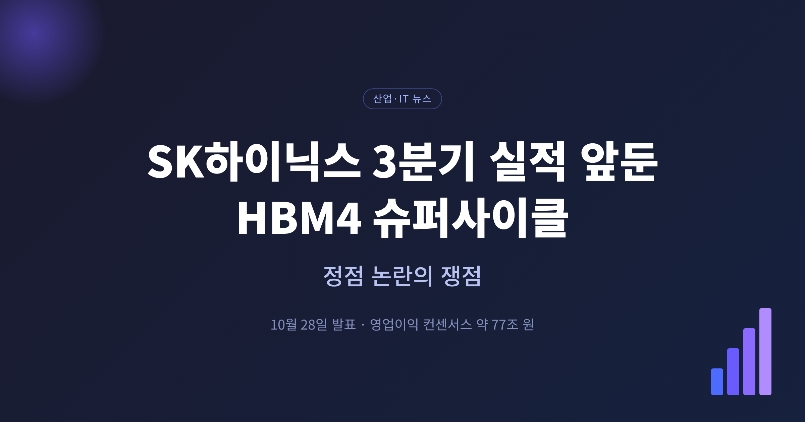
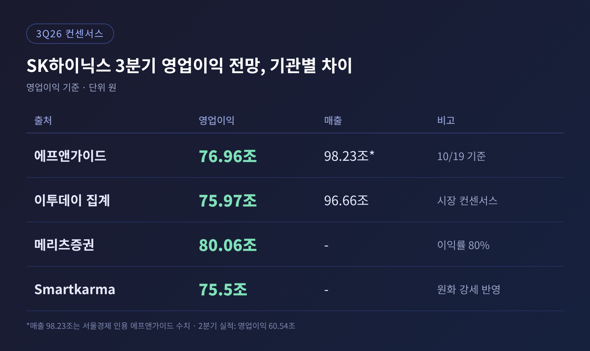
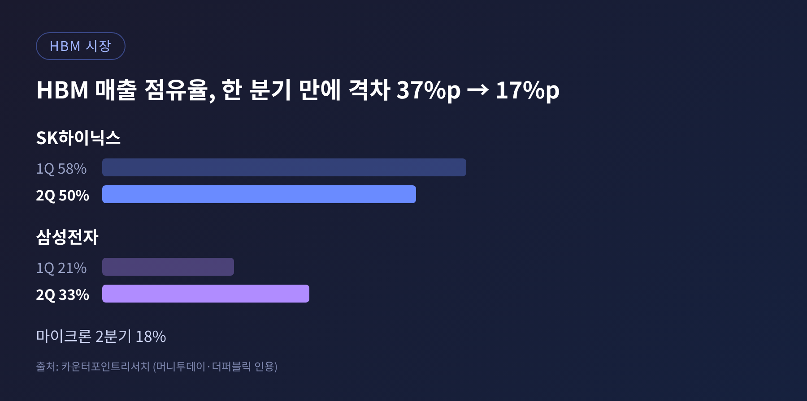
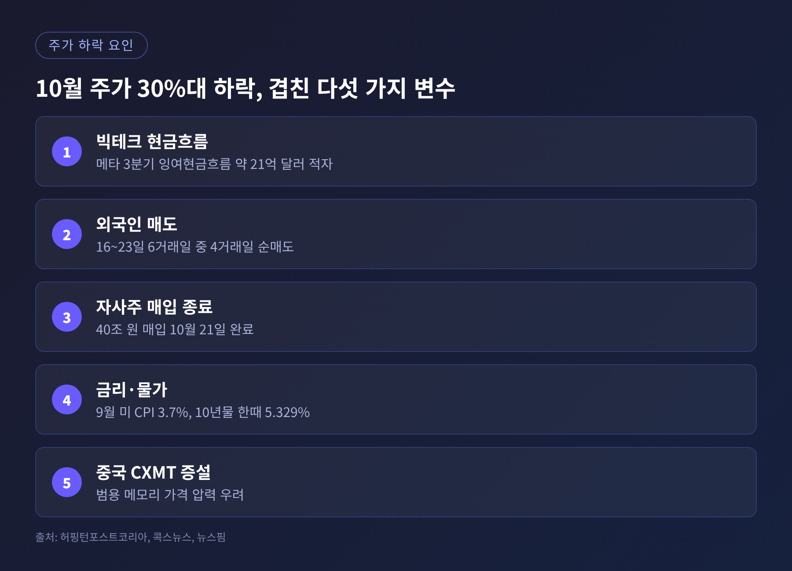
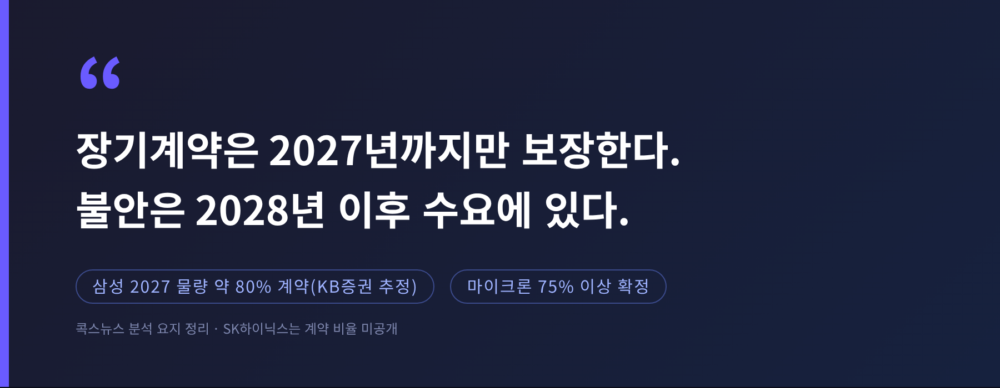
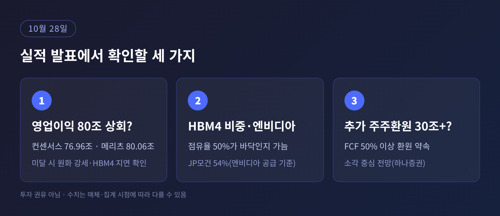

SK하이닉스가 10월 28일 3분기 실적을 발표합니다. 시장 컨센서스는 영업이익 약 77조 원으로, 실현되면 6분기 연속 사상 최대입니다. 이번 글에서는 삼성전자를 제외하고 SK하이닉스 한 곳만 놓고 HBM4 공급, 컨센서스 편차, 정점 우려, 설비투자를 정리해 보겠습니다.
3줄 요약
1. 에프앤가이드 기준 3분기 영업이익 컨센서스는 76조9640억 원, 영업이익률은 약 78%입니다.
2. 관전 포인트는 HBM4 매출 반영 속도, 엔비디아 물량 비중, 추가 주주환원 규모입니다.
3. 주가는 10월 들어 30% 넘게 빠졌는데, 이유는 실적이 아니라 2028년 이후 수요에 대한 불안입니다.
발표일은 대다수 매체가 10월 28일로 전합니다. 머니투데이만 29일로 적었고, 삼성전자 확정 실적이 29일이라 혼동이 있었던 것으로 보입니다. 이 글에서는 28일을 기준으로 삼겠습니다.
컨센서스는 매체마다 조금씩 다릅니다. 숫자를 한 줄로 못 박기보다 나란히 놓고 보시는 편이 안전합니다.

에프앤가이드 기준 영업이익은 76조9640억 원입니다. 서울경제는 같은 집계에서 매출을 98조2257억 원으로 전했습니다. 이투데이가 인용한 시장 컨센서스는 영업이익 75조9712억 원, 매출 96조6633억 원입니다. 집계 시점이나 대상 기관이 달라서 생긴 차이로 보이지만, 원문에서 사유가 밝혀지지는 않았습니다.
메리츠증권은 80조600억 원, 영업이익률 80%를 제시했습니다. D램 63조 원, 낸드 17조 원 수준입니다. 반대로 해외 리서치 플랫폼 스마트카르마의 애널리스트는 원화 강세를 이유로 75.5조 원을 내놓았습니다.
비교 기준도 있습니다. 2분기 실적은 매출 79조3187억 원, 영업이익 60조5426억 원이었습니다. 메리츠 전망대로라면 전분기보다 약 32% 늘어납니다.
한 가지 눈여겨볼 대목이 있습니다. 같은 컨센서스가 3개월 전보다 5.6% 낮아졌다는 점입니다. 더퍼블릭과 아시아투데이는 원화 강세와 엔비디아 루빈 일정 지연에 따른 HBM4 출하 시점 조정을 이유로 꼽았습니다. 기록은 세우되 기대에는 못 미칠 수 있다는 시각이 나오는 배경입니다.
3분기는 엔비디아 차세대 플랫폼 '베라 루빈'용 HBM4 매출이 본격 반영되는 첫 분기로 거론됩니다. 카운터포인트리서치에 따르면 2분기까지 HBM 매출 대부분은 HBM3E에서 나왔습니다. 세대 교체가 실적에 처음 드러나는 시점인 셈입니다.
메리츠증권은 SK하이닉스가 HBM 비중이 높은 탓에 범용 D램 가격 상승의 수혜를 상대적으로 덜 받아 왔다고 봅니다. 3분기 D램 평균판매가격은 22%, 출하량은 13% 늘고, 낸드 가격도 15% 오른다는 추정입니다. 예전에는 HBM이 이익을 끌었다면, 지금은 범용 가격과 HBM4가 함께 끌고 가는 구조로 바뀌는 중입니다.
엔비디아 물량도 쟁점입니다. 머니투데이가 전한 JP모건 분석에서 SK하이닉스는 2026년 엔비디아 HBM 공급의 54%를 차지해 3사 중 가장 높습니다. 다만 BigGo 파이낸스가 정리한 JP모건 전망은 다릅니다. 시장 점유율을 2025년 60%에서 2026년 46%, 2027년 41%로 보는 것입니다. 기준이 엔비디아 공급인지 전체 시장인지에서 갈린 것으로 보이나, 원문만으로는 확인되지 않습니다. 두 숫자를 섞어 읽으시면 안 됩니다.
카운터포인트리서치 기준 HBM 매출 점유율은 1분기 58%에서 2분기 50%로 내려갔습니다. 삼성전자는 21%에서 33%로 올랐고, 마이크론은 18%입니다. 두 회사의 격차는 한 분기 만에 37%포인트에서 17%포인트로 줄었습니다.

3분기 전망은 더 날카롭습니다. 번스타인은 3분기 HBM 매출을 삼성 87억 달러, SK하이닉스 76억 달러로 추정했습니다. 수출 데이터를 회귀 모형에 넣은 추정치이지 실제 발표 수치가 아닙니다. 그래도 삼성이 처음 앞설 수 있다는 해석이 나오는 이유입니다.
HBM4 출발 시점을 두고는 시각이 엇갈립니다. 트렌드포스는 6월에 SK하이닉스 HBM4 양산이 인터페이스 동기화 문제로 3분기로 밀릴 것으로 예상했습니다. SK하이닉스는 7월 29일 2분기 실적 발표에서 대량 출하를 2분기에 시작했다고 밝혔습니다. 삼성전자는 2월 양산 출하를 시작했고, 3분기 HBM4 매출이 2분기의 3배를 넘을 것이라고 전했습니다.
한계도 인정해야 합니다. 이 논쟁은 아직 회사 발표와 외부 추정이 맞붙은 상태입니다. 28일 숫자가 나오기 전에는 어느 쪽이 맞는지 가리기 어렵습니다. 한편 LS증권은 SK하이닉스의 2027년 HBM 영업이익률 전망을 약 80%에서 약 60%로 낮췄다고 BigGo는 전합니다. 이익률 하향은 가격 협상력에 대한 경계로 읽힙니다.
실적 전망이 좋은데도 주가는 반대로 움직였습니다. 콕스뉴스에 따르면 SK하이닉스는 10월 초 180만 원대에서 22일 122만3000원까지 내려갔습니다. 하루 낙폭도 컸습니다. 22일 5%대 하락 뒤 23일 4.42% 올라 127만7000원에 마감했습니다.
이유는 실적이 아닙니다. 보도들을 종합하면 요인은 이렇게 겹쳐 있습니다.

가장 큰 변수는 빅테크의 현금흐름입니다. 허핑턴포스트코리아는 메타가 3분기 잉여현금흐름 약 21억 달러 적자를 냈고, 이는 상장 이후 처음이라고 전했습니다. AI 인프라 투자가 이어지는 가운데 수익이 따라오는지 의문이 커진 것입니다. 키움증권 한지영 연구원은 2026~2030년 AI 인프라 투자 약 7조 달러에 비해 데이터센터발 AI 매출은 3.6조 달러 이하일 것으로 추정했습니다.
여기에 물가와 금리가 얹혔습니다. 뉴스핌에 따르면 9월 미국 소비자물가는 전년 대비 3.7% 올랐고, 10년물 금리는 한때 5.329%까지 치솟았습니다. 중국 CXMT의 증설이 범용 메모리 가격을 누를 수 있다는 걱정도 있었습니다. 외국인은 16일부터 23일까지 6거래일 중 4거래일 순매도였고, 8월 발표한 40조 원 자사주 매입은 21일 마무리됐습니다. 주가를 받치던 매수 주체가 사라진 셈입니다.
핵심은 시점입니다. 장기공급계약은 2027년까지만 수요를 보장합니다.

SK하이닉스는 2분기 실적에서 핵심 고객 포함 10여 곳과 장기공급계약 협상을 끝냈고, 고객들이 더 많은 공급을 요청하고 있다고 밝혔습니다. 계약 물량 비율은 공개하지 않았습니다. 비교 대상으로, 삼성은 KB증권 추정으로 2027년 물량의 약 80%, 마이크론은 75% 이상을 확정했습니다. 장기계약은 변동성을 줄이지만 가격이 급등하는 구간에서는 상승 폭을 제한할 수 있다고 서울경제는 짚었습니다.
저평가 논리도 있습니다. SK증권 한동희 연구원은 2027년 예상 주가수익비율을 3.7배 수준으로 보고 업계가 현저히 저평가됐다고 평가했습니다. 메리츠 김선우 연구원은 22일 종가 기준 2027년 주가순자산비율이 1.10배로 역사적 저점 부근이라고 밝혔습니다. 반면 BNK투자증권 이민희 연구원은 "메모리 수요 모멘텀 둔화가 주가 상단을 제한"한다고 평가했습니다. 같은 숫자를 두고 싸다는 사람과 사이클이 끝난다는 사람이 공존하는 장면입니다.
공급 측면에서는 투자가 관건입니다. 회사는 2분기 컨퍼런스콜에서 올해 투자 규모가 일정 단축과 확대를 반영해 40조 원 후반 수준이 될 것이라고 밝혔습니다. 청주 M15X 양산 시점은 앞당기고, 용인 1기 팹 클린룸은 2027년 초 문을 엽니다. 집행은 고객 수요 가시성과 투자 효율에 맞춰 단계적으로 한다는 입장입니다.
투자를 늘리는 쪽과 수요 둔화를 걱정하는 쪽이 만나는 지점입니다. 공급이 늘어나는 2027년 이후에도 수요가 따라오느냐가 사이클의 길이를 정합니다. 이번 발표에서 투자 가이던스가 바뀌는지 확인해 보실 만합니다. 다만 이번 분기 투자 계획은 발표 전이라 확인되지 않았습니다.
솔리다임 문제도 있었습니다. 낸드 자회사 솔리다임의 나스닥 상장을 추진하자 금융당국이 이중상장 규정 위반이라는 입장을 냈습니다. 서울경제에 따르면 SK하이닉스는 상장 검토를 중단했습니다. 같은 기사에서 iM증권 양현경 연구원은 외부 자금조달 기회가 줄어 향후 투자 재원 부담이 커질 수 있다고 짚었습니다.

첫째는 영업이익이 80조 원을 넘느냐입니다. 메리츠를 비롯한 일부 애널리스트는 HBM4 효과로 넘길 수 있다고 봅니다. 반대로 컨센서스를 밑돌면 원화 강세와 HBM4 지연이 실제로 발목을 잡았다는 신호가 됩니다. 4분기 컨센서스는 에프앤가이드 기준 87조2701억 원입니다.
둘째는 HBM4의 실제 비중과 엔비디아 물량에 대한 언급입니다. 점유율 50%가 하락 추세의 중간인지, 바닥인지 가늠할 단서가 됩니다.
셋째는 추가 주주환원입니다. SK하이닉스는 2025~2027년 누적 잉여현금흐름의 50% 이상을 돌려주겠다고 약속했고, 하나증권 김록호 연구원은 최소 30조 원 이상의 추가 환원을 기대합니다. 소각 중심일 가능성이 높다는 전망입니다.
장기 전망치도 갈립니다. 하나증권은 SK하이닉스의 2027년 영업이익을 405조 원으로 보고 올해 대비 57% 늘어난다고 했습니다. 스마트카르마는 시장이 "2027년에 끝나는 사이클"을 가격에 반영했지만 마이크론은 2028년까지 공급이 빠듯하다고 본다고 지적했습니다.
정리하면 이렇습니다. 이번 발표는 숫자가 좋은지가 아니라, 좋은 숫자가 얼마나 오래 가는지를 묻는 자리입니다.
"기록은 확실하고, 시험대는 2028년입니다."
28일 이후 이 글에서 인용한 전망치 가운데 몇 개가 맞았는지 대조해 보시길 권합니다. 어느 쪽이 옳았는지는 숫자가 말해 줄 것입니다.
※ 이 글은 공개된 보도와 증권사 전망을 정리한 정보 제공용이며, 특정 종목의 매수·매도를 권유하지 않습니다. 인용한 수치는 매체·집계 시점에 따라 다를 수 있고, 투자 판단과 그 결과는 투자자 본인에게 있습니다.
출처: 머니투데이(10/20), 헤럴드경제(10/20), 더퍼블릭(10/21), 이투데이(10/22), 서울경제(9/25, 10/24), 아시아투데이(10/25), SBS Biz(10/25), 허핑턴포스트코리아(10/23), 콕스뉴스(10/25), 뉴스핌(7/29, 10/15), BigGo 파이낸스(10/22), Smartkarma(10/22), 아시아경제(7/29)